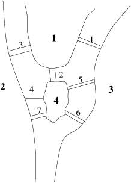
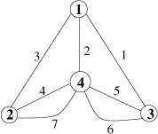

Graphes et
réseaux avec Scilab, la boîte à outils Metanet
Première partie
Claude Gomez Maurice Goursat
Les problèmes de réseaux sont très classiques dans de
nombreux domaines. Les réseaux que l'on rencontre le plus souvent sont :
- les réseaux dits de service : eau, gaz, électricité
et téléphone ;
- les réseaux de transport auxquels nous sommes de plus en plus
sensibles et qui nous causent des soucis quotidiens. En effet, qui n'a pas
été pris dans un embouteillage, particulièrement en
Île de France ?
Pour tous ces problèmes de réseaux, les modélisations
varient mais la structure sous-jacente utilisée est celle d'un graphe.
Ces mêmes structures se retrouvent dans d'autres domaines, par exemple en
informatique. Nous pouvons citer deux problèmes standards : celui de
l'analyse et de l'optimisation d'algorithmes pour la compilation et celui de
l'implantation d'algorithmes sur des réseaux de processeurs.
On dispose dans Scilab d'une boîte à outils pour définir,
traiter et visualiser les graphes et les réseaux : elle s'appelle
Metanet. Grâce à l'existence dans Scilab de la structure de
données de listes, les graphes ont été définis en
utilisant de telles structures (ici des tlist, voir Linux
Magazine 14). Cela permet de manipuler facilement des graphes sous la forme de
simples variables et d'avoir toute une panoplie de fonctions qui opèrent
sur ces variables : les fonctions de plus bas niveau sont celles qui modifient
le graphe, viennent ensuite celle qui calculent sur les graphes et enfin celles
qui résolvent des problèmes de réseaux. De plus un
éditeur et visualisateur graphique est disponible, ce qui est
indispensable lorsque l'on veut voir ce qu'il se passe.
1 Euler se promène
Leonhard Euler (1707-1783) est considéré par
certains historiens des sciences comme le plus grand mathématicien de
tous les temps. C'est en particulier lui qui a découvert la
célèbre relation eip=-1 où l'on retrouve trois des plus
fameux symboles mathématiques.
La ville de Koenigsberg est traversée par une rivière qui
possède deux branches et qui entoure une île. Il y a sept ponts
pour traverser la rivière à différents endroits (voir la
figure X(a)). Quand un grand mathématicien comme
Euler se promène à Koenigsberg, c'est tout à fait normal
qu'il se demande si un piéton, en se promenant, peut trouver un chemin
lui permettant de passer sur tous les ponts en passant une fois et une seule
sur chacun d'eux ? On dit que ce problème est l'un des tout premiers de
la théorie des graphes.
En effet, il est possible d'associer à ce problème ce que l'on
appelle un graphe non orienté dans lequel les ponts sont les
arêtes du graphe et les sommets correspondent aux quatre parties de la
ville délimitées par la rivière (voir la figure
X(b)). On voit bien sur ce graphe que l'on peut passer de
la partie 3 à la partie 4 en utilisant les ponts 5 ou 6. Résoudre
le problème d'Euler consiste à trouver un chemin dans le graphe
qui passe par toutes les arêtes une fois et une seule : dans le langage
des graphes on parlera de chaîne plutôt que de chemin car il n'y a
pas d'orientation sur les arêtes.


Figure 1: La ville de Koenigsberg
Bien sûr, Euler a résolu le problème, et vous ?
Peut-on utiliser Metanet pour résoudre ce problème ?
On va tout d'abord créer le graphe en utilisant l'éditeur
graphique de Metanet. Pour cela on lance la commande :
metanet()
et la fenêtre graphique s'affiche aussitôt. On clique dans l'item
New du menu Files, on donne un nom au graphe,
par exemple pont, on dit qu'il n'est pas orienté (en
anglais << orienté >> se dit << directed >>) et
on utilise la souris pour créer le graphe : un click du bouton droit de
la souris crée un sommet, un click du bouton gauche permet de
sélectionner un sommet ou une arête, et un click du bouton droit
dans un sommet après en avoir sélectionné un autre
crée une arête entre les deux. Automatiquement les sommets et les
arêtes sont numérotés de façon interne. Il est aussi
possible de leur donner n'importe quel nom. Ici cela n'a aucun
intérêt et l'on utilise l'item Automatic Name du
menu Modify pour utiliser la numérotation interne comme
noms. On sauve le graphe (item Save du menu Files
) et par l'item Quit du menu Files on
quitte le mode d'édition de graphes. Pour visualiser les noms des
sommets et des arcs, on sélectionne les sous-items name
des items Node display et Arc display du menu
Graph. Voir la figure X. Voilà
notre graphe créé, on peut travailler !
Figure 2: La fenêtre Metanet avec le graphe du pont
En fait, actuellement, l'éditeur/visualisateur de graphes est un
processus indépendant de Scilab et le résultat de notre travail
est la création d'un fichier ASCII nommé pont.graph
. Il possible que dans des releases futures ce fonctionnement soit
changé et que Scilab partage les graphes avec
l'éditeur/visualisateur. Donc pour pouvoir travailler avec ce graphe, il
faut le charger dans Scilab en faisant :
g=load_graph("pont");
où g n'est autre qu'une tlist contenant
toutes les informations sur le graphe.
Pour résoudre le problème d'Euler, on va utiliser la
méthode bien connue parfois qualifiée de
<< bourrin >> qui va consister à tester tous les
ensembles d'arêtes contenant les 7 arêtes distinctes (qui
correspondent aux ponts) afin de voir si ce sont des chaînes. Pour cela,
on va d'abord générer tous les arrangements de ces arêtes
dans une matrices ar qui va avoir 5040 lignes (factorielle 7)
et 7 colonnes : une ligne de la matrice sera un ensemble d'arêtes
à tester. Un vrai informaticien de nos amis nous a donné
l'algorithme qui permet de générer cette matrice dont nous
donnons ci-après la fonction Scilab correspondante (sauvée dans
un fichier genar.sci)
function ar=genar(n)
global ar l;
fact=1; for i=1:n, fact=fact*i; end;
ar=zeros(fact,n); l=1;
ar(1,:)=1:n; ref=1:n;
genar1(n,1,ref);
function genar1(n,m,ref)
global ar l;
if size(ref,"*")<>0 then
for i=1:size(ref,"*")
ar(l:$,m)=ref(i);
ref2=ref; ref2(i)=[];
genar1(n,m+1,ref2);
end
else
l=l+1;
end;
qui génère la matrice désirée. Comme on peut le
voir, cette fonction n'a rien à envier à un programme C++ ou
Scheme, et elle montre que l'on peut faire de la récursion en Scilab.
Nous laissons au lecteur curieux le soin de comprendre pourquoi ça
marche, pour notre part nous avons abandonné.
Ensuite la session suivante nous donne la solution du problème des ponts
de Koenisberg :
-->getf("genar.sci")
-->ar=genar(7);
-->nsol=0; sol=zeros(1,7);
-->for i=1:size(ar,"r")
--> p=ar(i,:);
--> ns=path_2_nodes(p,g); // transforme un chemin en sommets
--> if ns <> [] then nsol=nsol+1; sol(nsol,:)=p; end;
-->end
-->nsol
nsol =
0.
On boucle sur les lignes de ar qui contiennent toutes les
possibilités de chaînes p. La fonction
path_2_nodes cherche une suite de sommets consécutifs
correspondant à ces chaînes et retourne la matrice vide s'il n'y
en a pas. Donc nsol compte le nombre de chaînes qui
résolvent le problème et elles sont stockées dans la
matrice sol.
Tout cela pour voir qu'il n'y a pas de solution ! C'est d'ailleurs ce qu'Euler
avait trouvé. Mais, comme souvent, il vaut mieux réfléchir
avant de programmer. À chaque sommet, on peut associer son degré
c'est-à-dire le nombre d'arêtes ayant ce sommet pour
extrémité. Le fait de pouvoir trouver une chaîne solution
du problème est déterminé par le nombre de sommets ayant
des degrés pairs ou impairs. Sur la chaîne solution, les sommets
intermédiaires figurent une fois s'ils sont de degré 2 (on arrive
et on part une et une seule fois) ou 2 fois s'ils sont de degré 4
(chaque passage utilise 2 arêtes), etc. Un sommet de degré impair
ne peut donc pas être un sommet intermédiaire, il ne peut
être qu'un sommet initial ou terminal. Et dans notre graphe tous les
sommets sont de degré impair, donc pas de solution.
Mais il serait dommage d'avoir réalisé ces beaux programmes pour
rien. Alors, nous allons les utiliser pour un petit problème bien connu
des écoliers (qui s'ennuient en classe). Prenant le dessin d'une
enveloppe ouverte, voir la figure X(a), il s'agit de savoir
si l'on peut, partant d'un point quelconque, réaliser le tracé
sans lever la plume du stylo. La réponse est oui et il est très
facile de trouver la solution par quelques essais. On sait même avec le
raisonnement de tout à l'heure que la solution part du sommet 1 pour
arriver au sommet 2 ou le contraire. Mais une question plus difficile est :
combien y-a-t'il de solutions possibles ? On voit sur la même figure
X(a) le graphe correspondant au problème qui est ici
tout tracé puisque c'est l'enveloppe elle-même (noter que le
croisement des diagonales n'est pas un sommet).
Figure 3: Les enveloppes
De même que pour le problème d'Euler, on crée le graphe
avec Metanet et on le sauve dans le fichier enveloppe.graph. La
session suivante donne le résultat (après un temps de calcul
assez long) :
-->getf("genar.sci")
-->g=load_graph("enveloppe");
-->ar=genar(8);
-->nsol=0; sol=zeros(1,8);
-->for i=1:size(ar,"r")
--> p=ar(i,:);
--> ns=path_2_nodes(p,g);
--> if ns <> [] then nsol=nsol+1; sol(nsol,:)=p; end;
-->end
-->nsol
nsol =
88.
Il y a 88 possibilités ! Elles sont symétriques deux à
deux, donc il y en 44 partant du sommet 1. Tout de même pas facile pour
les compter toutes. Par exemple en voici une (la 33
e) trouvée :
-->sol(33,:) // suite des aretes
ans =
! 2. 6. 5. 1. 7. 4. 3. 8. !
-->path_2_nodes(ans,g) // suite des sommets
ans =
! 2. 3. 5. 1. 2. 5. 4. 3. 1. !
Elle part du sommet 2.
Noter que l'on ne peut pas utiliser cette méthode de recherche
exhaustive avec un nombre d'arêtes trop grand car elle est très
coûteuse en place mémoire et en temps. Mais elle illustre bien la
puissance d'un outil comme Scilab où l'on peut vraiment programmer
avec des graphes, c'est-à-dire mélanger les calculs sur les
graphes avec la programmation interactive et efficace de Scilab.
On peut se poser la même question dans le cas où l'enveloppe est
totalement dépliée (voir la figure X(b)).
Comme dans ce cas il y a quatre sommets d'ordre impair égal à 5,
il n'y a pas de solution. Notez que ça fonctionne à nouveau si
l'on supprime un pli de l'enveloppe complètement
dépliée...
On nous a raconté qu'un moniteur de colonie de vacances ne voulant pas
donner une autorisation de sortie a trouvé astucieux, plutôt que
de choisir un refus mal ressenti, de conditionner la sortie par la solution de
ce problème. Les enfants ont usé plusieurs crayons et sont partis
se coucher...C'est une application très détournée de la
théorie des graphes.
2 Les entrailles de Metanet
Tout d'abord, nous allons théoriser un petit peu et se poser la question
fondamentale qui est l'objet du paragraphe suivant.
2.1 Qu'est-ce qu'un graphe ?
Un graphe G=( N, A) est
défini par la donnée d'un ensemble de points
N qui sont les sommets du graphe (on parle aussi de noeuds) et
d'un ensemble A qui sont les arcs (on parle
d'arêtes dans le cas où les arcs ne sont pas orientés) du
graphe. Si les sommets N sont
numérotés (1,2,...,n), un arc est simplement un couple
(i,j) avec i,j Î
N : il y a donc un lien entre les sommets
i et j. On dit que j est la tête (ou le
début) de l'arc et i sa queue (ou sa fin). Ceci correspond au cas
orienté : l'arc << va de i vers j >> ; dans le cas non
orienté, le lien est appelé arête et il n'y pas de sens sur
le lien.
Dans le cas de la circulation automobile, par exemple, les liens sont les
routes et les croisements sont les noeuds. Quand la route est à double
sens entre deux noeuds, il y a un arc dans chaque sens : c'est un graphe
orienté. Si l'on considère un réseau
téléphonique, entre deux points reliés par une ligne une
communication on peut passer dans un sens ou dans l'autre : le graphe (les
noeuds sont les centraux) est non orienté. Mais en fait, lorsque l'on
veut résoudre des problèmes de télécommunications,
les graphes deviennent orientés ; on considère alors un paquet de
lignes entre 2 centraux C1 et C2 que l'on ventile à chaque instant (on a
un graphe dynamique) : les lignes occupées de C1 vers C2 (donc
orientées), celles de C2 vers C1 et enfin les lignes libres (non
orientées).
Un graphe peut avoir des boucles, c'est-à-dire des arcs
(i,i) et des arcs multiples entre deux sommets (on parle dans ce
cas de multigraphes). Au prix de l'augmentation de la taille du graphe, en
créant des sommets et des arcs fictifs, on peut se ramener au cas d'un
graphe simple, c'est-à-dire qui n'a qu'un seul arc entre deux sommets.
Il y a là un point technique très important : en effet les
graphes simples sont les seuls à pouvoir être
représentés par des matrices (et vice-versa), ce qui permet
d'utiliser toute l'algorithmique correspondante qui est bien sûr
disponible dans Scilab. Ces matrices ont la particularité d'être
creuses (elles contiennent très peu d'éléments non nuls)
et les algorithmes spéciaux sur les matrices creuses de Scilab peuvent
leur être appliqués.
2.2 La graph-list
Dans Metanet un graphe est représenté par une tlist
appelée graph-list et qui contient 33
entrées (dont la plupart sont optionnelles). Seules les cinq
premières entrées sont obligatoires :
- name
- nom du graphe (une chaîne de caractères) ;
- directed
- flag qui vaut 1 si le graphe est orienté ou 0 sinon ;
- node_number
- nombre de sommets ;
- tail
- vecteur ligne des numéros des sommets de queue pour chaque arc ;
- head
- vecteur ligne des numéros des sommets de tête pour chaque arc
;
Un graphe doit avoir au moins un arc, donc tail et head
ne peuvent pas être vides. Avec ce modèle tous les types
de graphes, simples, multigraphes, avec ou sans boucle, peuvent être
traités par Metanet.
Figure 4: Un petit graphe orienté
La fonction de base pour créer un graphe s'appelle make_graph
qui prend en entrée les cinq paramètres décrits
ci-dessus et génère la tlist du graphe. Par
exemple, pour créer le petit graphe orienté de la figure
X, on écrira :
g=make_graph("foo",1,4,[1 1 2 3],[2 3 1 3]);
On peut visualiser ce graphe en faisant :
show_graph(g)
qui ouvre automatiquement une fenêtre Metanet s'il n'y en a pas
déjà une ouverte et qui affiche le graphe avec un positionnement
automatique des sommets puisque nous n'avons pas donné leurs
coordonnées.
Bien sûr, on aurait pu créer ce graphe en utilisant
l'éditeur graphique comme nous l'avons fait dans le paragraphe
X. Dans ce cas, après chargement dans Scilab par
load_graph, les coordonnées des sommets sont disponibles
dans les slots node_x (vecteur ligne des abscisses des sommets)
et node_y (vecteur ligne des ordonnées des sommets). On
aurait aussi pu les donner directement dans Scilab par :
g("node_x")=[42 108 176 162];
g("node_y")=[36 134 36 93];
On voit donc que l'on peut faire des allers et retours entre
l'éditeur/visualisateur de graphes et l'interpréteur de Scilab et
qu'un certain nombre de choses pour la définition et les
caractéristiques des graphes peuvent être faites
indifféremment dans l'un ou dans l'autre.
En fait, il y a trois catégories d'éléments dans la
graph-list : ceux qui définissent la structure
mathématique minimale du graphe, ceux qui sont utilisés pour la
représentation graphique et ceux qui sont liés à des
problèmes de réseaux en donnant des valeurs aux sommets et aux
arcs (capacité, longueur, poids, coût, etc.).
Dans ceux qui sont utilisés pour la représentation graphique,
node_color et edge_color, qui déterminent
respectivement la couleur des sommets et des arêtes, sont très
utiles pour visualiser des chemins ou des ensembles de sommets dans les
graphes. Les deux fonctions show_arcs et show_nodes
permettent aussi de visualiser respectivement des ensembles
d'arêtes ou de sommets en les distinguant par rapport aux autres parties
du graphe.
2.3 Comment représenter un graphe ?
La structure de données utilisée pour représenter un
graphe est capitale pour la complexité des algorithmes : coût et
taille. Si la représentation sous la forme tête-queue est
très compacte et générale, c'est souvent une
représentation par listes d'adjacences, décrite
ci-après, qui est utilisée. Elle utilise trois vecteurs (pour un
graphe de n sommets et m arcs) :
- lp est le tableau des pointeurs, de taille n+1 ;
- ls est le tableau des sommets, de taille m ;
- la est le tableau des arcs, de taille m.
Pour chaque sommet i, la liste des sommets successeurs de
i est contenue dans le tableau ls à partir
de l'élément numéro lp(i). Les successeurs
du sommet i se trouvent donc dans le tableau ls
de l'élément lp(i) à
l'élément lp(i+1)-1. Par exemple, pour obtenir le
vecteur des successeurs du sommet i, on écrit simplement
en Scilab ls(lp(i) :lp(i+1)-1). Les arcs correspondants
permettant d'atteindre ces sommets successeurs sont dans le tableau la
, toujours de l'élément lp(i) à
l'élément lp(i+1)-1. Noter que le dernier
élément de lp ne correspond pas à un
sommet, mais n'est là que pour indiquer la fin des pointeurs.
Dans le cas où le graphe n'est pas orienté, on considère
que chaque arête correspond à deux arcs d'orientation
opposée.
Par exemple, la représentation pour le graphe de la figure
X est :
La plupart des algorithmes utilisent cette représentation et elle est
automatiquement calculée par les fonctions correspondantes. Sinon c'est
la fonction adj_lists qui permet de calculer directement ces
listes d'adjacence. Toujours avec le même graphe :
-->g=make_graph("foo",1,4,[1 1 2 3],[2 3 1 3]);
-->[lp,la,ls]=adj_lists(g)
ls =
! 2. 3. 1. 3. !
la =
! 1. 2. 3. 4. !
lp =
! 1. 3. 4. 5. 5. !
D'autres représentations sont disponibles dans Metanet : les matrices
sommets-arcs, sommets-sommets et les listes chaînées. Avec bien
entendu toutes les fonctions qui permettent de les obtenir et de les
manipuler.
3 Jouer avec les graphes
Nous allons d'abord montrer en quelques petits exemples comment on peut jouer
avec les éléments de la graph-list et visualiser
des ensembles de sommets et d'arêtes.
3.1 Distinguer les sommets de degré impair
On peut faire de la programmation en Scilab sur un ou plusieurs graphes afin
d'en calculer des caractéristiques comme par exemple distinguer les
sommets de degré impair. On écrit ainsi quelques lignes qui vont
donner la solution et on va l'appliquer au graphe de l'enveloppe du paragraphe
X, figure X(a). D'abord on charge le
graphe et on l'affiche :
-->g=load_graph("enveloppe");
-->show_graph(g);
On fait une boucle sur les sommets du graphe et on calcule leur degré.
find est une fonction standard de Scilab qui prend en argument
une condition sur une matrice (expression booléenne) et retourne les
indices des éléments de la matrice pour lesquels cette condition
est vérifiée. Donc ici find retourne le vecteur
des sommets liés au sommet i ; il suffit d'en calculer
la taille et, si elle est impaire, de stocker le numéro du sommet
correspondant dans le vecteur ns :
-->n=0;
-->for i=1:node_number(g)
--> d=size(find(g('tail')==i | g('head')==i),"c");
--> if modulo(d,2) <> 0 then n=n+1; ns(1,n)=i; end;
-->end;
On trouve bien les sommets 1 et 2 et on les distingue par show_nodes
:
-->ns
ns =
! 1. 2. !
-->show_nodes(ns)
Le graphe de l'enveloppe est tout petit, mais le même calcul peut
être fait sur un graphe de plusieurs milliers de sommets sans
problème. On peut aussi transformer ces lignes de code en fonction
Scilab et créer une nouvelle fonction qui retourne pour un graphe
donné le nombre de ses sommets de degré impair. En fait, la
fonction qui retourne le degré des sommets existe déjà
dans Scilab, c'est nodes_degrees, et on aurait pu l'utiliser
ici, mais le but était de montrer comment on pouvait facilement
programmer sur les graphes avec Scilab.
Sur ce petit exemple, on vient de voir comment le fait de disposer de toute la
puissance de Scilab avec la boîte à outils Metanet permet de faire
rapidement et facilement des calculs souvent fastidieux avec d'autres logiciels
de graphes.
3.2 Circuit hamiltonien
Nous allons montrer maintenant une autre méthode pour distinguer des
sommets ou des arcs d'un graphe : faire du coloriage. Nous allons prendre pour
cela l'exemple de la recherche d'un circuit hamiltonien.
Un circuit d'un graphe orienté est un chemin fermé,
c'est-à-dire une suite d'arcs consécutifs qui permet de partir
d'un sommet du graphe pour retourner à ce même sommet. Un
circuit hamiltonien est un circuit qui passe une fois et une fois
seulement par tous les sommets du graphe. Il n'y a bien sûr aucune raison
qu'un cycle et à plus forte raison qu'un cycle hamiltonien existe dans
un graphe orienté.
On crée un joli graphe en utilisant l'éditeur de Metanet, on le
charge et on cherche un circuit hamiltonien en utilisant la fonction Scilab
hamilton qui va retourner en cas d'existence le vecteur des arcs
du circuit :
g=load_graph("hamilton");
cir=hamilton(g);
On crée un vecteur de 1 (correspondant à la couleur noire) que
l'on remplit de 11 (correspondant à la couleur rouge), on l'assigne
à l'entrée edge_color du graphe g
et on l'affiche :
edgecolor=ones(1,arc_number(g)); edgecolor(cir)=11*ones(cir);
g("edge_color")=edgecolor;
show_graph(g)
Cela donne la figure X.
Figure 5: Circuit hamiltonien
Il est ainsi facile en jouant avec les couleurs de faire apparaître des
tas de propriétés ou des résultats de calcul sur les
graphes.
3.3 Autres jeux de base
Avec les graphes, on peut faire des tas d'autres choses comme :
- déterminer les composantes connexes ou fortement connexes ;
- chercher des cycles, des circuits, calculer des bases de cycles ;
- chercher des plus courts chemins ;
- calculer la fermeture transitive ;
- déterminer le couplage maximum ;
- déterminer une clique maximale ;
- déterminer les points d'articulation ;
- déterminer le centre, le diamètre ;
- trouver un arbre de poids minimum ;
- etc.
Toutes ces fonctions, et bien d'autres encore, sont disponibles dans
Metanet.
4 Conclusion
Bien sûr il existe toute une panoplie de fonctions plus
sophistiquées qui travaillent sur les graphes et les réseaux.
Nous avons montré simplement le fonctionnement de la boîte
à outils Metanet, mais il y a bien d'autres fonctionnalités car
comme disait Hamlet à son pote Horatio << There are more things in
heaven and Earth, Horatio, Than are dreamt of in our philosophy >>. Nous
verrons cela dans le numéro suivant.
Contacts
Site Web de Scilab : http://www-rocq.inria.fr/scilab
Serveur ftp : ftp://ftp.inria.fr/INRIA/Scilab
Adresse email : Scilab@inria.fr
Newsgroup : comp.soft-sys.math.scilab
This document was translated from LATEX
by HEVEA.